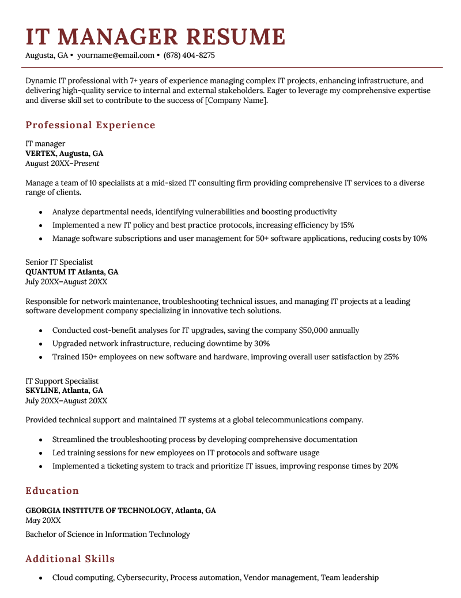

12 Information Technology (IT) Resume Examples
Beat the competition by getting inspiration from some of the top IT resume examples on the internet. Be sure to also check out our IT cover letter examples for more inspiration.

IT resume template (text format)
Start by choosing the best resume format for your IT resume.
[Your Name]
[Your Address], New York, NY
[Your Email Address] | [Your Phone Number] | [LinkedIn Profile]
Professional Summary
IT Specialist with over 9+ years of experience in information security and digital forensics. Expert with a wide variety of security, engineering, networking, and operating system software. Possesses an Associate Degree in Information Security and Digital Forensics.
Professional Experience
Security Operations Security Analyst
Security Professionals Inc., Columbia, SC | May 20XX – Present
- Monitor multiple security systems for a Fortune 500 company
- Investigate incidents caused by malicious activities, and identify false positives
- Document security events daily to create a baseline of activity for the client network
Network Operations Monitoring Technician
Technology Smarts, Charleston, SC | August 20XX – April 20XX
- Refined and improved the existing documentation system, resulting in reduced labor costs totaling $15,000 annually via increased workplace efficiency
- Consolidated multiple ticketing systems, improving communication and ticket turnover rate by 7%
- Investigated alerts created by IDS/IPS, including malicious file uploads, compromised servers, SQL injections, and port scanning
Information Security Consultant
Suntrust Financial, Charleston, SC | May 20XX – Present
- Conducted risk assessments and security audits for various clients
- Developed and implemented security policies and procedures
- Conducted penetration testing and vulnerability assessments
- Provided training and awareness programs for employees on information security best practices
Education
- B.S. Information Technology | Trident Community College - Graduation Date: May 20XX
- A.A. Information Security and Digital Forensics | Trident Community College - Graduation Date: May 20XX
Certifications
- Certified Information Systems Security Professional (CISSP), 20XX
- Microsoft Certified Systems Engineer (MCSE), 20XX
- Computer Security & Forensics Certificate, 20XX
Skills
- McAfee SIEM/EPO/NSM
- FireEye CMS/ETP
- OllyDbg/WinDbg/GBD
- Wireshark/TCPView
- DNS Servers, Mail Server
- Windows 10, 11, Linux, Mac OS
- Google Workspace
IT resumes by experience level
Whether you’re new to the IT field or applying for a senior role, we’ve prepared resume examples tailored to your level of experience.
Entry-level IT resume
Looking to break into IT? This example shows you what to include on your first IT resume:

Why this example works
- Unique layout: The three-column layout is attention-grabbing while remaining clean and well-organized
- Quantified metrics: The candidate quantifies their past achievements wherever possible
- Eye-catching graphics: The graphics in the skills section make this resume stand out
IT manager resume
As an experienced IT professional, structure your resume like this:
Why this example works
Graphic accents: The graphics in the corners add visual interest without being distracting.
Efficient use of space: The two-column format draws attention to both the candidate’s skills and their work experience.
Tidy layout: The resume includes enough detail without being too text-heavy.
IT resume examples by job title
Here are resumes for different IT-related job titles:
Use this example for inspiration if you’re writing an IT specialist resume:
 ;
;
Why this example works
- Clean layout: The clear, no-frills layout is perfect for more formal roles.
- Focus on experience: This template leaves a lot of room to elaborate on your work history.
- Strong introduction: The professional summary shows that the candidate is personable and responsible.
IT director resume
To land a job as an IT director, you’ll need to prove that you can deliver results and lead a team. Here’s an example of an IT director resume that does just that:

Average IT technician salaries in the US
The following table includes information from O*NET Resource Center by the U.S. Department of Labor, Employment and Training Administration (USDOL/ETA). Used under the CC BY 4.0 license. The data is presented based on the top states in the USA.


Make a Resume in Minutes
Pick your template, fill in a few details, and our builder will do the rest.